01ภาพรวม: ดาวแห่งสงคราม
Armageddon (อาร์มาเก็ดดอน) เป็นดาวเมืองรังผึ้ง (Hive World) ใน Segmentum Solar ใกล้ Terra โรงงานของดาวผลิตอาวุธและรถถังให้จักรวรรดิ และกองทหาร Armageddon Steel Legion ก็มาจากที่นี่ ผิวดาวส่วนใหญ่เป็นทะเลทรายเถ้าถ่านจากมลพิษหลายพันปี เมืองหลัก ได้แก่ Hades, Helsreach, Acheron, Infernus, Tartarus, Tempestora, Volcanus และ Death Mire
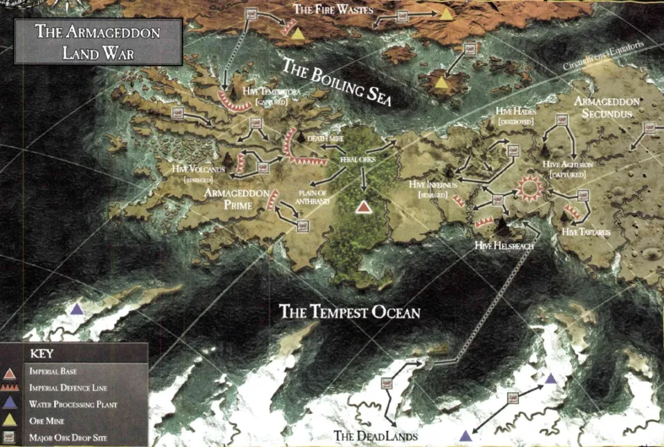
Armageddon คือดาว Ullanor เดิม — ที่ Horus ได้ตำแหน่ง Warmaster และที่ The Beast ตั้งเมืองหลวง หลัง War of the Beast Adeptus Mechanicus แอบเทเลพอร์ตดาวทั้งดวงไปซ่อนแล้วรายงานว่าทำลายแล้ว ไม่กี่ร้อยปีต่อมามนุษย์มาตั้งรกรากโดยไม่รู้ความจริง
02ครั้งที่ 1 (444.M41): Angron
ระหว่างพายุ Warp ลัทธิของ Khorne ก่อกบฏ และยาน Space Hulk ขนาดยักษ์ก็ปรากฏเหนือดาว ภายในคือ Angron Daemon Primarch ของ World Eaters พร้อมกองทัพปีศาจ ฝ่ายป้องกันถูกต้อนจนเกือบหมดหวัง จนกระทั่ง Space Wolves และ Grey Knights มาถึง Grey Knights ฝ่าเข้าไปกลางฝูงปีศาจและส่ง Angron กลับ Warp
แต่ตอนจบคือโศกนาฏกรรม — เพื่อปกปิดความลับว่ามี Daemon Primarch อยู่จริง Ordo Malleus สั่งทำหมันประชากรทั้งดาวและทหารที่รอดชีวิต แล้วส่งไปค่ายแรงงานตลอดชีวิต และนำประชากรใหม่มาแทน Logan Grimnar แห่ง Space Wolves ไม่เคยให้อภัย Inquisition ในเรื่องนี้
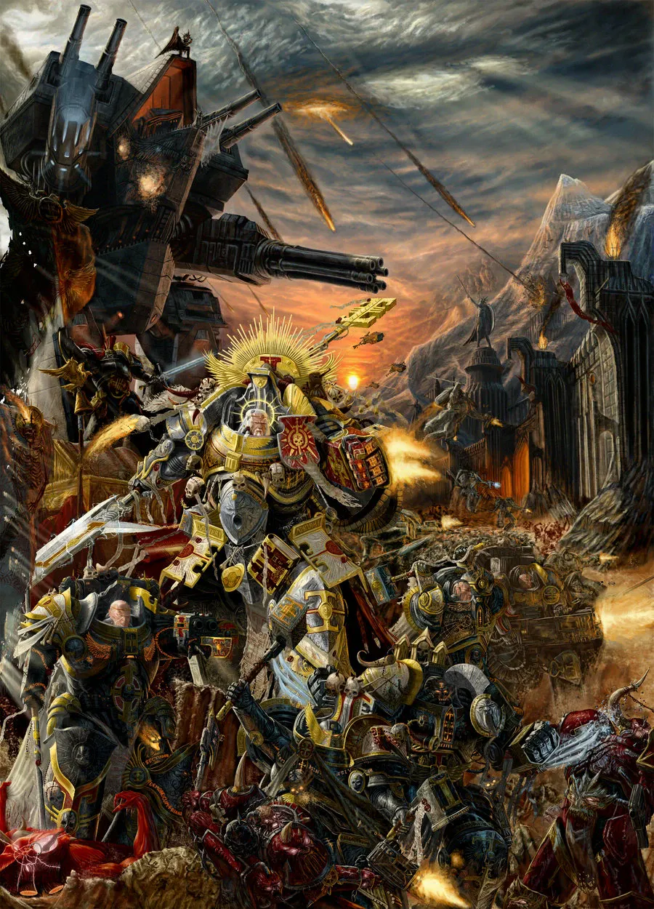
03Ghazghkull Mag Uruk Thraka
ปี 932.M41 Ork ธรรมดาตัวหนึ่งบนดาว Urk ถูกกระสุน Bolter ยิงเข้ากะโหลก หมอ Ork ชื่อ Mad Dok Grotsnik เปลี่ยนสมองส่วนที่เสียหายด้วยแผ่นโลหะ หลังจากนั้นเขาอ้างว่าได้ยินเสียงของเทพ Gork และ Mork ภายในหกปีเขากลายเป็นหัวหน้าเผ่า และรวมห้าเผ่าบนดาวเป็น WAAAGH! เดียว — เขาคือ Ghazghkull Mag Uruk Thraka ขุนศึก Ork ที่อันตรายที่สุดในกาแล็กซี เพราะฉลาด วางแผนเป็น และ "รู้" ว่าตัวเองถูกเทพเลือก
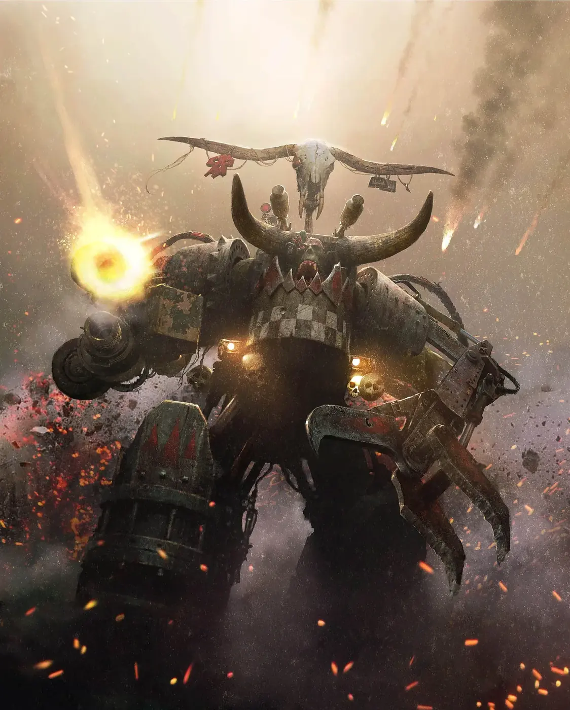
04ครั้งที่ 2 (941–943.M41): Yarrick แห่ง Hades
Space Hulk ชนดาว
ยาน Space Hulk ของ Ghazghkull ทำลายแนวป้องกันในระบบแล้วพุ่งชนดาว Ork ยกพลลงเป็นห้าเผ่า
Herman von Strab
Overlord Herman von Strab ไม่ฟังคำเตือนใด ๆ ส่ง Commissar Sebastian Yarrick ไปอยู่ Hive Hades เพราะขัดคำสั่งด้วยการขอความช่วยเหลือจากภายนอก แล้วโจมตีแบบกระจัดกระจายจนทหารตายเปล่า
Mannheim เสียสละ
Princeps Kurtiz Mannheim แห่ง Legio Metalica ถูกสั่งให้บุกทั้งที่รู้ว่าจะแพ้ เขาบอกลาครอบครัวแล้วนำ Titan สู้กับ Gargant ของ Ork จนตายทั้ง Legion — ช่องเขา Mannheim Gap ถูกตั้งชื่อตามเขา
Yarrick ยืนหยัด
Yarrick รวมทหาร คนงาน และแก๊งใต้ดินของ Hades ตั้งรับ ทุกแผนที่ Ghazghkull ใช้ Yarrick หาทางรับได้หมด ระหว่างนั้นเขาเสียแขนข้างหนึ่งให้หัวหน้า Ork และยึด Power Klaw ของมันมาใช้แทน Ghazghkull หมกมุ่นกับ Hades จนลืมสนามรบอื่น
ประชาชนสู้ตาย
ชาวเมือง Helsreach สู้ทุกวิถีทาง คนขับเครนขนสินค้าเชื่อมตัวเองในเครนแล้วสู้กับ Gargant จนเมืองแตกเพราะการโจมตีทางจิตของ Weirdboy
กำลังเสริมมาถึง
Space Marine จาก Blood Angels (นำโดย Commander Dante), Salamanders และ Ultramarines มาถึง Dante เข้าควบคุมการป้องกัน ฝ่าย Ork แตกพ่าย Ghazghkull หนีไป แต่การรบกับ Ork ที่เหลือยืดเยื้ออีกเกือบยี่สิบปี
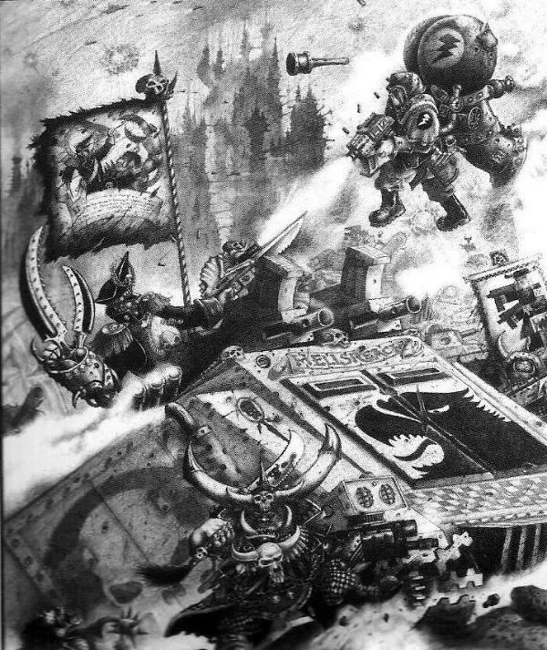
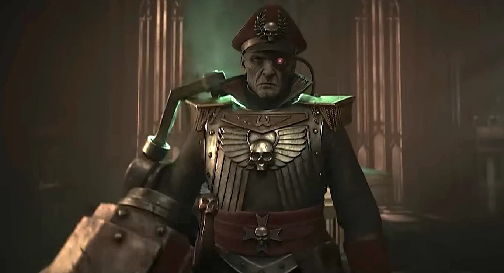
หลังสงคราม Yarrick ตามล่า Ghazghkull ไปถึงดาว Golgotha และถูกจับ Ghazghkull ปล่อยเขาไปเพราะเห็นว่าเป็นศัตรูที่คู่ควร — ทั้งสองกลายเป็นคู่แค้นที่เคารพกันมาตลอด
05ครั้งที่ 3 (998.M41): WAAAGH! ที่ใหญ่ที่สุด
ห้าสิบเจ็ดปีหลังการบุกครั้งแรกตรงวันเดียวกัน Ghazghkull กลับมาพร้อม WAAAGH! ที่ใหญ่กว่าเดิมหลายเท่า เขาเรียนรู้จากความผิดพลาดครั้งก่อน และ Yarrick ก็ถูกเรียกกลับมาบัญชาการป้องกันอีกครั้ง
อาวุธลับของ Ork
Rok — ดาวเคราะห์น้อยที่ติดเครื่องยนต์และปืน ตกลงมาเป็นป้อมปราการบนพื้นดาว, เรือดำน้ำยักษ์ Gigatanker บุกเมืองชายฝั่ง และภูเขาน้ำแข็งที่ติดเครื่องยนต์บรรทุก Ork นับพัน
Helsreach
Chaplain Grimaldus แห่ง Black Templars นำการป้องกัน Hive Helsreach จนเมืองแตก เขาเป็นหนึ่งในผู้รอดชีวิตไม่กี่คน และกลายเป็นตำนาน (นิยาย Helsreach)
Space Marine ทั่วกาแล็กซี
Chapter จำนวนมากมาร่วมรบ เช่น Salamanders ที่ Acheron, Blood Angels และ Black Templars ที่ส่งกองครูเสดใหญ่ภายใต้ High Marshal Helbrecht
ผลลัพธ์
จักรวรรดิชนะแบบหวุดหวิด Ghazghkull ทิ้งดาวไปเพื่อตั้ง "Great WAAAGH!" ที่ใหญ่กว่า Yarrick กับ Black Templars ไล่ตามไป แต่ Ork ที่เหลือยังสู้ต่อจนดาวกลายเป็น "สวรรค์ของนักรบ" ในสายตา Ork
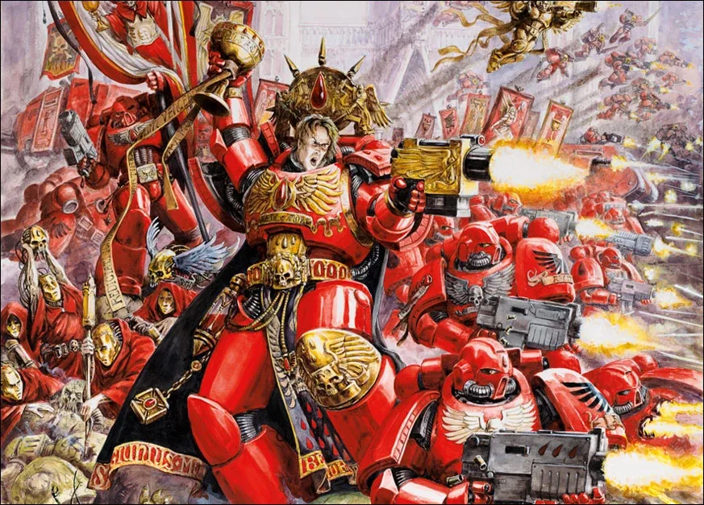
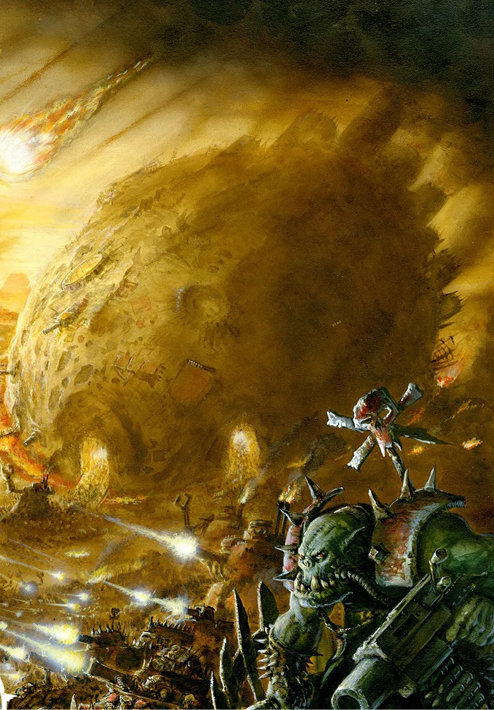
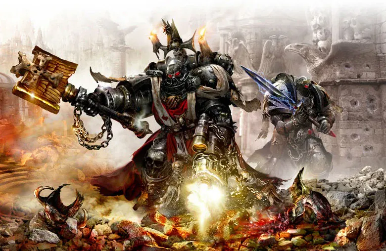
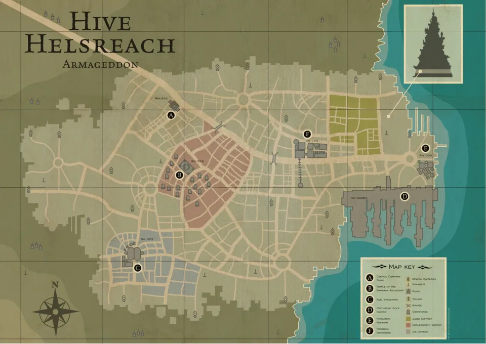
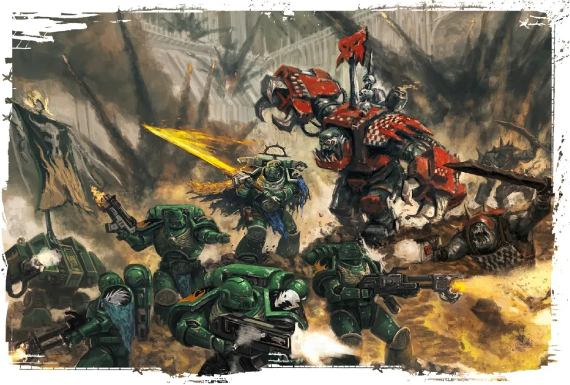
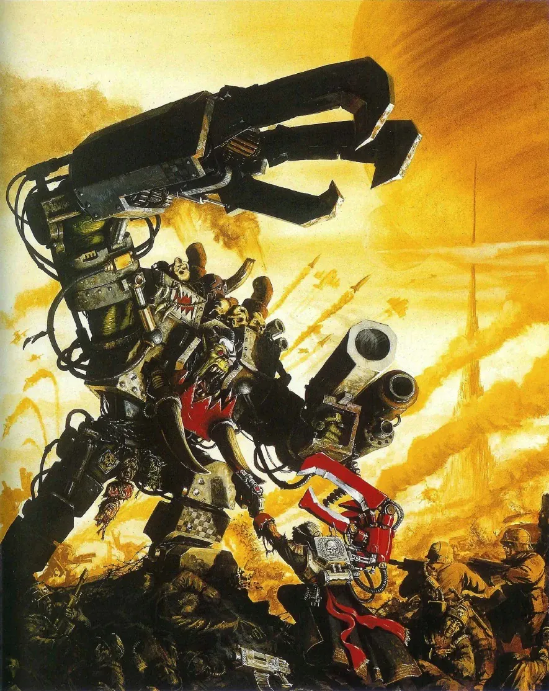
06Era Indomitus และสงครามล่าสุด
เมื่อ Great Rift เปิดออก Armageddon ถูกพายุ Warp ตัดขาด ทั้งมนุษย์และ Ork ที่ติดอยู่บนดาวต้องสู้กับคลื่นปีศาจ บางครั้งถึงขั้นร่วมมือกันชั่วคราว ปีศาจของ Tzeentch และ Khorne รบกันเองจนครึ่งดาวกลายเป็นดินแดนแบบ Daemon World เมื่อกองกำลังเสริมที่นำโดย Salamanders มาถึง พวกเขาหยุดพิธีกรรมที่จะนำ Angron กลับมาที่ดาวนี้ได้ทัน
ในเนื้อเรื่องของ Warhammer 40,000 ฉบับที่ 11 Ghazghkull กลับมาอีกครั้ง Ork ใช้เครื่องเทเลพอร์ตยักษ์ Mega-Tellyshokka ส่งกองทัพเข้าจู่โจมแบบไม่ทันตั้งตัว จักรวรรดิตอบโต้ด้วย Operation Imperator ที่นำโดย Marneus Calgar รวม Space Marine หลาย Chapter สงครามยังดำเนินอยู่ ดูสรุปได้ที่ สงครามล่าสุด
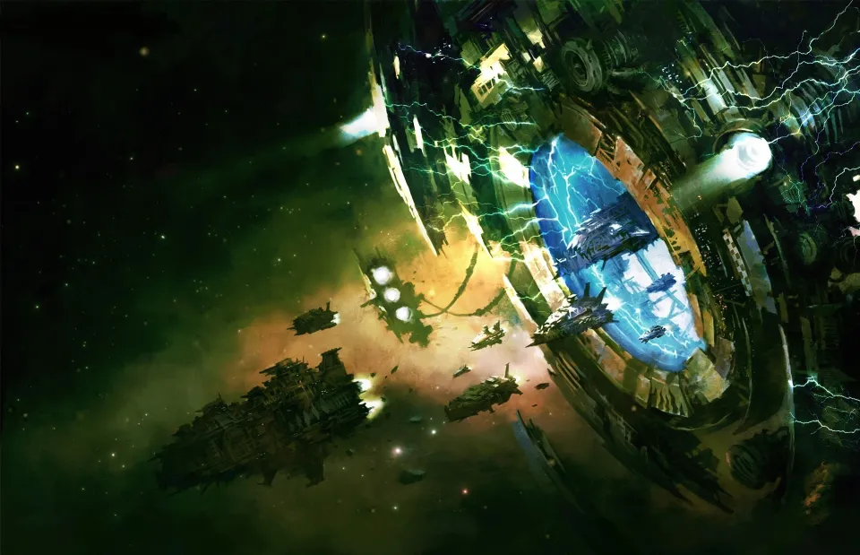
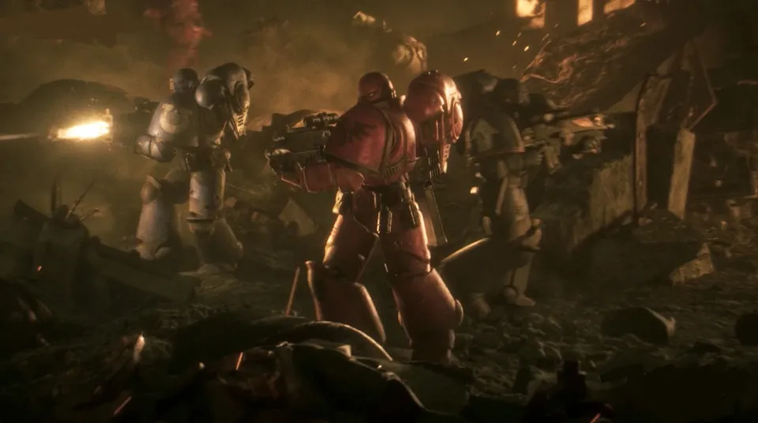
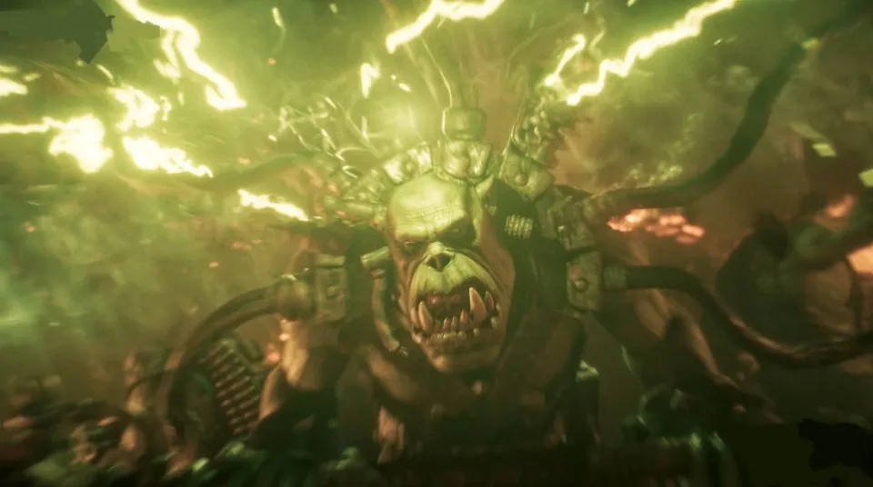

07แหล่งข้อมูลและหมายเหตุ
เนื้อหาหน้านี้สรุปและแปลเป็นภาษาไทยจากบทความใน Warhammer 40k Wiki (Fandom) ซึ่งเรียบเรียงจากหนังสือ Codex, หนังสือชุด Horus Heresy ของ Forge World และนิยาย Black Library ด้านล่างนี้ (ตรวจสอบ ต.ค. 2026)
- Armageddon
- First War for Armageddon
- Second War for Armageddon
- Third War for Armageddon
- Ghazghkull Mag Uruk Thraka
- Sebastian Yarrick
เนื้อเรื่อง Warhammer ถูกเขียนเพิ่มและแก้ไขมาตลอดหลายสิบปี ปี จำนวน และรายละเอียดบางจุดต่างกันไปตามหนังสือแต่ละเล่ม หน้านี้ใช้ฉบับที่แหล่งอ้างอิงส่วนใหญ่ยอมรับ และบอกไว้เมื่อมีหลายฉบับ